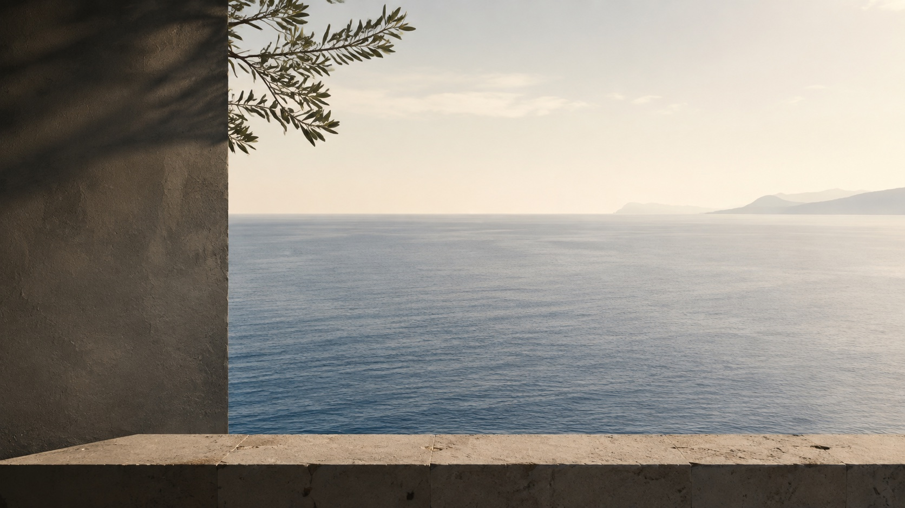
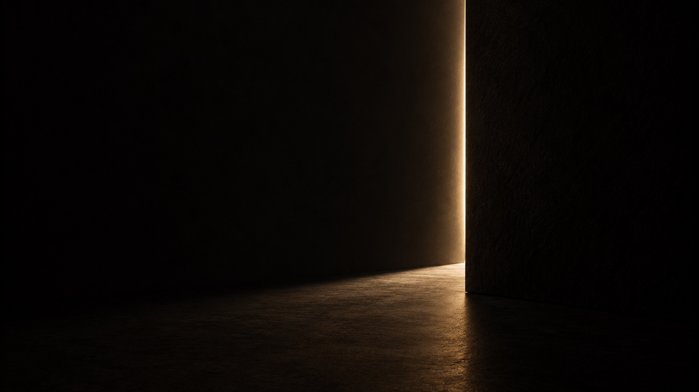
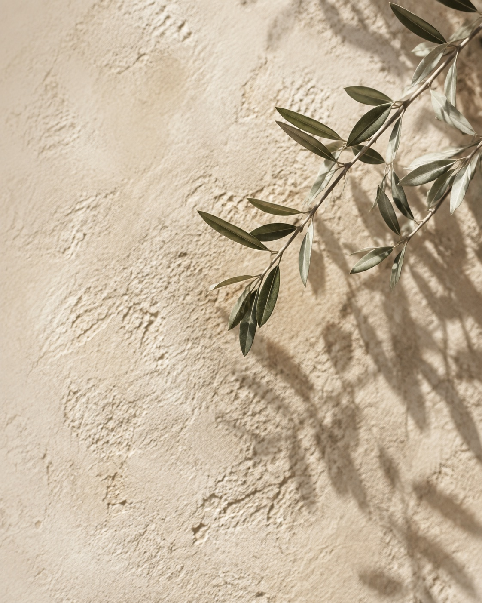
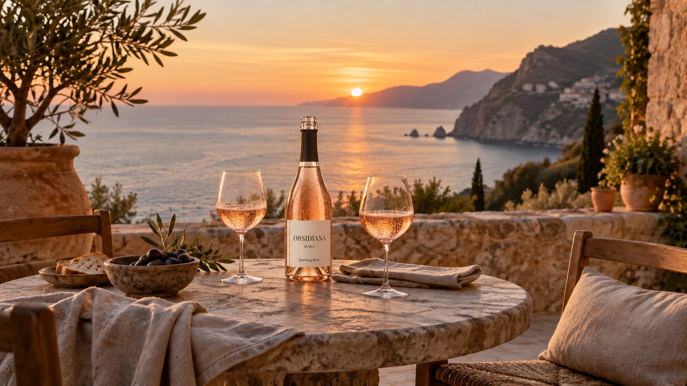

OBSIDIANA
Maison Mediterranea
Il Mediterraneo,da vivere.
Esplora i viniLa Maison
La Sicilia è l’origine.Il Mediterraneo è il mondo.

La collezione
Quattro espressioni. Una maison.

Il piacere di restare.
Contatti